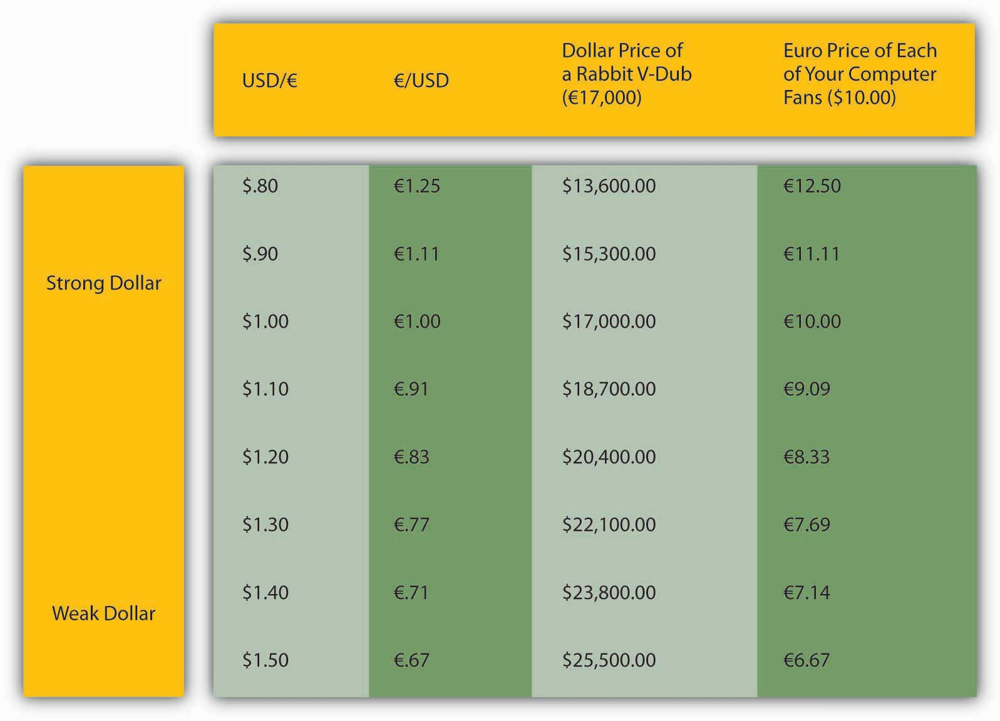

Before we turn to monetary theory (gulp!), there is one more real-world financial market we need to investigate in this and the next chapter, the market for foreign currencies or foreign exchange, where the relative prices of national units of account or exchange rates are determined. Why should you care how many U.S. dollars (USD) it takes to buy a euro or a yen, a pound (sterling) or a dollar (of Canada or Australia, respectively)? If you plan to travel to any of those places, you’ll want to know so you can evaluate prices. Is €1,000 a good price for a hotel room? How about ¥1,000?The symbol for the euro, the currency of the European Union, is €. The symbol for the Japanese yen is ¥. But even if you remain your entire life in a small village in Alaska, one of Hawaii’s outer islands, Michigan’s Upper Peninsula, or the northern reaches of Maine, the value of USD will affect your life deeply, whether you know it or not. Come again? How could that possibly be?
Every nation in the world trades with other nations. Some trade more than others (little islands like Iceland, Mauritius, and Ireland lead the way, in percentage of gross domestic product [GDP] terms anyway) but all do it, even illicitly, when the United Nations says that they can’t because they’ve been bad.www.entemp.ie/trade/export/sanctions.htm#overview Conducting trade via barter isn’t practical in most circumstances. So we use money. But what happens when people who want to trade use different types of money, when their units of account are not the same? There are several solutions to that problem. The most frequent solution today is for one party, usually the buyer, to exchange the money of his or her country for the money of the seller’s country, then to consummate the transaction.
How does this affect you? Well, when the unit of account of your country, say, U.S. dollars (USD or plain $), is strong, when it can buy many units of a foreign currency, say, Canadian dollars (C$), Canadian goods look cheap to you. And we all know what happens when goods are cheap. So you stop drinking Bud and start drinking Moosehead. Instead of going to Manhattan to shop, you go to Toronto, and check out some Maple Leafs, Raptors, and Blue Jays games while you’re at it. (You go in April, that magical month for sports fans.) When the Blue Jays game gets snowed out, you go instead to the Canadian ballet. (Do you have any sense of humor at all?) You might even consider buying a Canadian computer or automobile. (Okay, let’s not get crazy.) The point is you and your fellow Americans import more from Canada.
The Canadians are very happy about this, but they are not so thrilled with American goods, which look dreadfully expensive to them because they have to give up many of their dear loonies to buy USD. So they too eschew Manhattan for Toronto and drink Moosehead rather than Bud. In other words, U.S. exports to Canada fall. And because Canada is a major U.S. trading partner, that does not bode well for the U.S. economy overall, or U.S. residents, even those in remote villages. If USD were to continue to appreciate (strengthen, buy yet more C$), the situation would grow increasingly worse. Were the dollar to depreciate (weaken, buy fewer C$), the situation would ameliorate and eventually reverse, and you’d go back to Bud, Manhattan shopping sprees, and the Yankees, Mets, Knicks, Nets, Islanders, and Rangers.
A chain of pizza parlors in the southwestern part of the United States accepts Mexican pesos in payment for its pizzas. Many U.S. retail stores located near the Canadian border accept Canadian currency. (Many Canadian businesses accept U.S. dollars, too.) Why do these businesses accept payment in a foreign currency?
Well, maybe they are good folks who want to help out others and maybe some of them need foreign currencies to purchase supplies. But those are at best ulterior motives in most instances because the exchange rate offered usually heavily favors the retailer. For example, the pizza parlor’s exchange rate was 12 pesos to the dollar when the market exchange rate was closer to 11. So a $10 pizza costs 120 pesos (10 × 12) instead of 110 pesos (10 × 11). In short, it makes a tidy and largely riskless profit from the offer.
Or imagine you don’t have many assets or a high income, but you need an automobile. You see a commercial that says that there are three V-dubs (German-made Volkswagen automobile models) under $17,000. You think you can afford that and begin to make arrangements to buy a Rabbit. But look in Figure 18.1 "The dollar price of a €17,000 Rabbit and the euro price of a $10 computer fan" at what happens to the dollar price of a Rabbit when the exchange rate changes. Say that the Rabbit of your dreams costs €17,000. When the dollar and the euro are at parity (1 to 1), the Rabbit costs $17,000. If the dollar depreciates (buys fewer euro, and more USD are needed to buy €1), the Rabbit grows increasingly costly to you. If the dollar appreciates (buys more euro, and fewer USD are needed to buy €1), that cool automotive bunny gets very cheap indeed!
Figure 18.1 The dollar price of a €17,000 Rabbit and the euro price of a $10 computer fan
Now imagine that in your remote little town you make fans for French computers that you can sell profitably for $10.00. The dollar’s movements will affect you as a producer, but in precisely the opposite way as it affected you as a consumer. When the dollar appreciates against the euro, your computer fans grow more expensive in France (and indeed the entire euro zone), which will undoubtedly cut into sales and maybe your salary or your job. When the dollar depreciates, the euro price of your fans plummet, sales become increasingly brisk, and you think about buying a Cadillac (a more expensive American car).